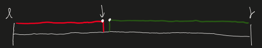

整數二分
何時使用
有單調性（monotone)的一組數字可以二分，但沒有單調性也可以使用二分法
在何時適用
若可以找到某種性質，在右半邊滿足，左半邊不滿足(在右半邊不滿足，左半邊滿足)，就可以尋找邊界
模板code
1
2
3
4
5
6
7
8
9
10
11
12
13
14
15
16
17
18
|
bool check(int x){/*stasify some conditions*/}
// [l, r] -> [l, mid] + [mid + 1, r]
int bsearch1(int l, int r)
{
int mid = l + r >> 1;
if(check(mid)) r = mid;
else l = mid + 1;
}
// [l, r] -> [l, mid - 1] + [mid, r]
int bsearch2(int l, int r)
{
int mid = l + r + 1 >> 1;
if(check(mid)) l = mid;
else r = mid - 1;
}
return l; //also can return r
|
圖例與解釋

找尋紅色的邊界：check(mid) ：滿足紅色條件
mid = (l + r +1)/2 （上取整）
if(check(mid))
- true(mid在紅色區間內) 答案在： [mid, r] 更新 l = mid;
- false(mid在綠色區間內) 答案在：[l,mid-1] 更新 r = mid-1;
- +1的原因: 因為C++下取整（下高斯），所以若 l=r-1 -> mid=(l+r)/2=l 因此在check(mid)==true時更新 l = mid會發生死循環。補上+1後，l = mid = r; l就能繼續更新 [l, r] -> [r,r] 停止循環

找尋綠色的邊界點：check(mid) ：滿足綠色條件
mid = l + r /2
if(check(mid))
- true(mid在綠色區間內) 答案在：[l, mid] 更新 r = mid;
- false(mid在紅色區間內) 答案在：[mid+1, r] 更新 l = mid+1;
思考方式
先寫出check函數，再根據條件，思考如何去更新區間
更新方式
- [l, r] 更新成 [l, mid] + [mid + 1, r]
- [l, r] 更新成 [l, mid - 1] + [mid, r]
LeetCode 類題
34. Find First and Last Position of Element in Sorted Array
1
2
3
|
Example 1:
Input: nums = [5,7,7,8,8,10], target = 8
Output: [3,4]
|
SOL:
1
2
3
4
5
6
7
8
9
10
11
12
13
14
15
16
17
18
19
20
21
22
23
24
25
26
27
28
29
30
31
32
33
34
35
36
37
|
class Solution {
public:
vector<int> searchRange(vector<int>& nums, int target) {
int n = nums.size();
if(!n) return {-1,-1};
vector<int> res(2, -1);
int l = 0, r = n - 1;
while(l < r)
{
int mid = l + r >> 1;
if(nums[mid] >= target) r = mid;
else l = mid + 1;
/*
5, 7, 7, 8, 8, 10
--------
滿足此區間
*/
}
if(nums[l] != target) return res;
res[0] = l;
l = 0, r = n - 1;
while(l < r)
{
int mid = l + r + 1 >> 1;
if(nums[mid] <= target) l = mid;
else r = mid - 1;
/*
5, 7, 7, 8, 8, 10
----------
滿足此區間
*/
}
res[1] = l;
return res;
}
};
|